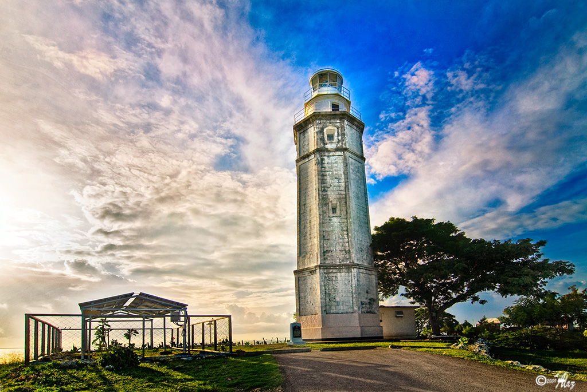
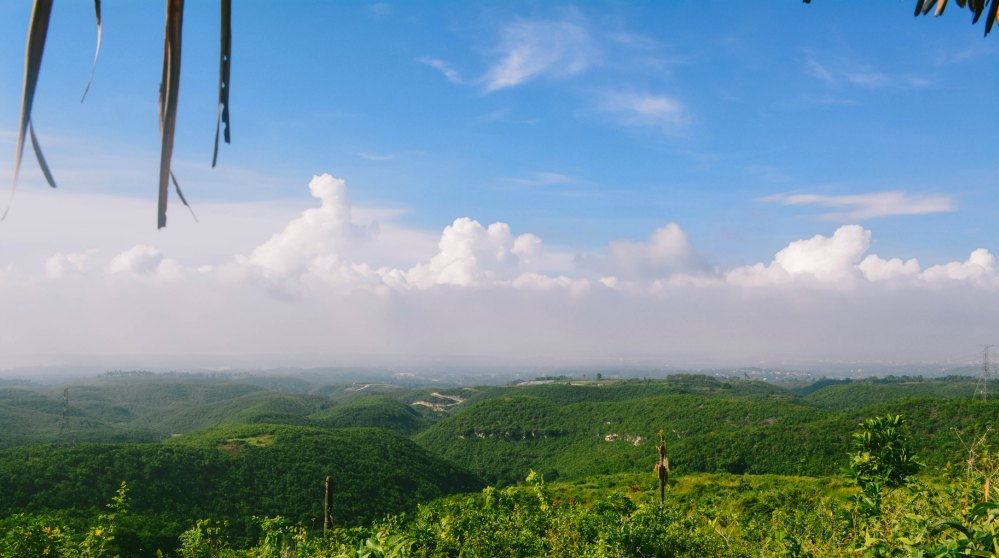
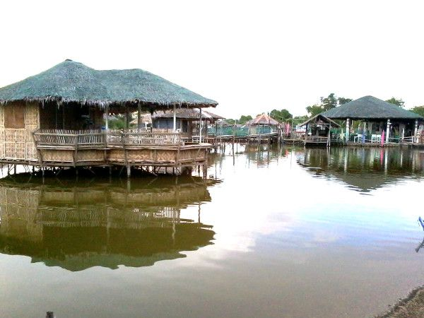

Bagacay Point Lighthouse
A historic landmark guiding ships for decades, offering breathtaking views and rich history.

LATABAN HILLS
A serene getaway offering pristine waters and lush surroundings.

Papa Kit's Marina and Fishing Lagoon
An exclusive escape combining luxury and natural beauty.

D'Pond
Fun-filled water adventures for families and friends alike.

San Fernando El Rey Parish Church
A historical and spiritual landmark, rich in cultural heritage.